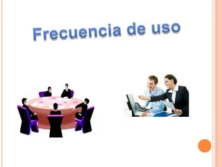
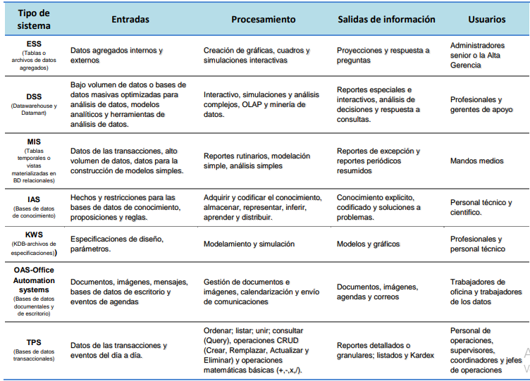

Ayudan a los directores a enfrentar y resolver aspectos estrategicos y tendencias a largo plazo, tanto en la empresa como en el entorno
externo. Su funcion principal es compaginar los cambios del entorno externo con la capacidad organizacional existente.
Suelen desarrollarse dentro de la organizacion In house, por lo tanto no se adaptan facilmente a paquetes disponibles en el mercado.
Apoyan en el proceso de innovacion de productos y procesos dentro de la empresa.
Su forma de desarrollo es a base de incrementos y a traves de su evolucion dentro de la organizacion. Se inicia con un proceso o funcion
en particular y a partir de ahi se agregan nuevas funciones o procesos.
Cambian significativamente el desempeño de un negocio al medirse por uno o mas indicadores clave, entre ellos, la magnitud del impacto.
Generan cambios fundamentales en la forma de dirigir una compañia, interactuar con clientes y proveedores y competir
Su funcion es lograr ventajas que los competidores no posean, tales como ventajas en costos y servicios diferenciados con clientes y
proveedores
Sistemas de nivel administrativo
Sirven a las actividades de supervision, control, toma de decisiones, y administrativas de los gerentes de nivel medio. Por lo general, este tipo de sistemas
proporcionan informes periodicos en lugar de información instantanea de operaciones. Apoyan a las decisiones no rutinarias y tienden a enfocarse en
decisiones menos estructuradas para las cuales los requisitos de informacion no siempre son claros.
Ayudar en el proceso de planeacion como una herramienta en el desarrollo de estrategias para dar ventajas competitivas a la empresa.
Apoyar las actividades de supervision, control, toma de decisiones y administracion de la gerencia intermedia.
Dar soporte en la toma de decisiones de los altos mandos administrativos mediante la retroalimentacion de la informacion recabada a los ESS.
Respuestas a informes periodicos a solicitud.
Informacion generada mediante extraccion y manipulacion de datos empresariales
Suministra informacion sobre el desempeño de la organizacion
Sistemas de nivel de conocimiento
Apoyan a los trabajadores del conocimiento y de datos de una organizacion. El proposito de estos sistemas es ayudar a las empresas comerciales a integrar el
nuevo conocimiento en los negocios y ayudar a la organizacion a controlar el flujo del trabajo de oficina. Identificar o clasificar nuestros activos de conocimiento
y a llevar los procesos de su gestion de una manera mas efectiva, todas las habilidades y los conocimientos deben de ser identificados y valorados, accesibles
desde cualquier sitio, deben ser capturados o almacenados, para que a su vez se puedan desarrollar y mejorar. Se reconocen las siguientes tipos: KWS, Sistemas de automatizacion de la oficina (OAS) y tecnicas inteligentes o Sistemas de Inteligencia Artificial (IAS).
Estan entre las aplicaciones de crecimiento mas rapidas en los negocios actuales.
Los OAS y las Estaciones de trabajo (Workstation) de diseño, investigacion y financieras entre otras Integran los conocimientos en el conjunto de la
organizacion y canalizan los flujos de informacion asociados a puestos intensivos en informacion. Los OAS son diseñados para aumentar la productividad de
los trabajadores de datos en la oficina, apoyando las actividades de coordinacion y comunicacion. Programan actividades. Comunican. Ademas coordinan a
diversos trabajadores de informacion, unidades geograficas y areas funcionales. Manejan y controlan documentos.
Utilizan las denominadas tecnicas inteligentes para la captura y codificacion del conocimiento no explicitado
Sistemas de nivel operativo
Apoyan a los gerentes operativos en el seguimiento de actividades y transacciones elementales de la organizacion como ventas, ingresos, deposito en efectivo, nomina, decisiones de credito y flujo de materiales e insumos.
El proposito principal de los sistemas en este nivel es responder las preguntas rutinarias y dar seguimiento al flujo de transacciones en la organizacion.
Ahorros significativos de mano de obra, debido a que automatizan tareas operativas de la organizacion y reducen los tiempos de ejecucion.
Apoyan las tareas a nivel operativo de la organizacion, tratan con procesos de rutina bien estructurados e incluyen aplicaciones para el mantenimiento de registros.
Son intensivos en entrada y salida de informacion; sus calculos y procesos suelen ser simples y poco sofisticados.
Son faciles de justificar ante la direccion general, debido a que sus beneficios son visibles y palpables
Sistemas de soporte a las decisiones
Sistema interactivo basado en computadora, el cual utiliza modelos y datos para resolver problemas no estructurados para apoyar a los tomadores de decision.
Brinda soporte a los decisores sin tratar de remplazarlos
Apunta hacia la eficacia-efectividad (capacidad de lograr de metas deseadas) mas que hacia la eficiencia(optimizar recursos para alcanzar las metas)
Es interactivo y amigable al usuario
Proporciona soporte a todos los niveles administrativos
Informacion generada mediante modelacion analitica de los datos empresariales

Estos son los sistemas de informacion por niveles

Creada el 13 de mayo de 2024
por Dana Juliana David Diaz.